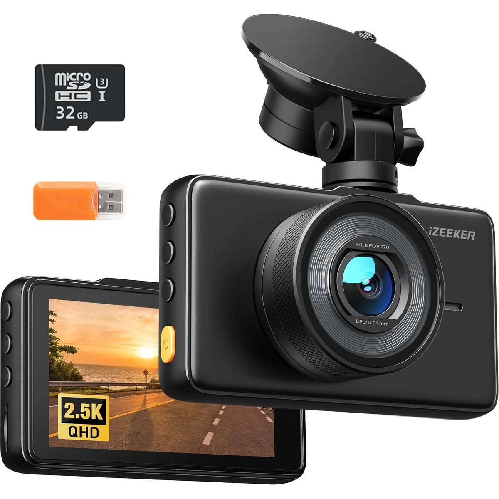
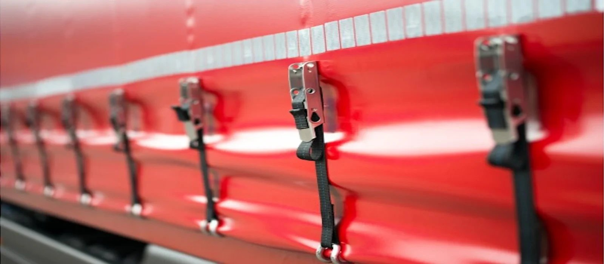

Truck security: protect your load, cab and yourself
Last updated October 2026
Cargo theft and break-ins at parking areas are a real risk for drivers in the UK and across Europe. On routes into the UK there's another one: you can be fined up to £10,000 for each person found hidden in your vehicle if you can't show you secured and checked it properly.
Check every time you stop
Lock and seal the trailer after loading, record the seal numbers, and check the seals, locks, roof, curtains and underneath every time you stop and before you board a ferry or train. Keep a written vehicle checklist; it's your evidence that you followed the rules.
Protect yourself
Where you can, park in secure, well-lit truck parks, especially on the approach to Channel ports. Lock the cab doors and use a door strap at night, and keep valuables out of sight. A dash cam records anything that happens around the truck.
What to carry
-
High-security trailer padlock
Slows thieves down and helps prevent people getting into the trailer at ports.
For day runs: 1 per trailer, plus a spare
For a week of nights out: 1 per trailer, plus a spareLoad theft from parked trailers is common, and on routes to the UK you can be fined up to £10,000 for each person found hidden in your vehicle if you can't show you secured and checked it properly. A strong padlock on the rear doors is a basic step.
- A closed-shackle or shrouded padlock that's hard to cut
- Sold Secure or CEN security rated
- Weatherproof, with spare keys kept separately
Affiliate link. Prices and availability are shown on Amazon. Photo is illustrative.
-
Numbered security seals
Show that the doors haven't been opened since you loaded and checked.
For day runs: A pack of 100
For a week of nights out: A pack of 100Numbered seals on the rear doors and any TIR cord let you prove the load hasn't been tampered with. Record the seal number on your vehicle checklist, and check it every time you stop.
- Uniquely numbered plastic or bolt seals
- Bolt seals are stronger for container and high-value loads
- Keep a written log of seal numbers and checks
Affiliate link. Prices and availability are shown on Amazon. Photo is illustrative.
-
Cab door security strap
Ties both cab doors together from the inside while you sleep.
For day runs: 1 per sleeper cab
For a week of nights out: 1 per sleeper cabThieves at parking areas sometimes break into cabs at night, while the driver is asleep. A heavy-duty strap or bar linking the two door handles from the inside means the doors can't be opened from outside, even if the lock is forced.
- A strap or bar that fits your cab's door handles
- Quick to release from the inside in an emergency
- Use it with the doors locked, not instead
Affiliate link. Prices and availability are shown on Amazon. Photo is illustrative.
-

Dash cam
Video evidence for crashes, cash-for-crash scams and insurance claims.
For day runs: 1 per cab
For a week of nights out: 1 per cabWhen a car pulls in front of a truck and brakes, it's often the truck driver who gets blamed. Front and rear footage protects your licence and your job, and some insurers and operators require it.
- At least 1440p front camera with good night vision
- Front and rear, or a 3-channel kit that also covers the cab
- Hardwired or 24V compatible, with a parking mode
Affiliate link. Prices and availability are shown on Amazon. Photo is illustrative.
-
Rechargeable head torch
Hands-free light for walk-round checks, coupling up and dark yards at night.
For day runs: 1 head torch
For a week of nights out: 1 head torchYour daily walk-round check, coupling and uncoupling, and finding a fault on a dark lay-by all need two hands. A bright head torch is one of the most-used bits of kit in any cab.
- USB-C rechargeable, so you can charge it in the cab
- At least 300 lumens, with a red light mode for inside the cab
- Waterproof to IPX4 or better
Affiliate link. Prices and availability are shown on Amazon. Photo is illustrative.
-

Ratchet straps
Spare straps for securing loads that have shifted, or loads that weren't secured properly.
For day runs: 4–6 straps
For a week of nights out: 4–6 strapsLoad security is the driver's responsibility, and a load that shifts can tip the trailer or fall into the road. DVSA can stop you and issue fines if your load isn't secure. Keep a few spare straps even if the trailer has its own.
- EN 12195-2 rated, with the lashing capacity printed on the label
- 50mm straps for most curtainsider loads
- Replace any that are cut, frayed or have damaged ratchets
Affiliate link. Prices and availability are shown on Amazon. Photo is illustrative.
-
Tacho card and document wallet
Keep your licence, CPC card, tacho card and passport together and dry.
For day runs: 1 wallet
For a week of nights out: 1 walletAt a roadside check you'll be asked for your driving licence, Driver CPC card, tachograph card and printouts, passport and the vehicle and load documents (such as CMR notes). A dedicated wallet keeps them together. If you drive in the EU, carry your UK GHIC health card too.
- Slots for licence, CPC card and tacho card
- A zipped A4 section for CMR notes and vehicle papers
- Spare tachograph printer rolls in the cab
Affiliate link. Prices and availability are shown on Amazon. Photo is illustrative.


Plan the kit for your trip
Our free planner sizes food, water and kit for your nights out, Europe and winter driving.
Frequently asked questions
What is the fine for clandestine entrants in the UK?
Up to £10,000 for each person found hidden in a vehicle, and the penalty can apply to the driver, the owner and the operator. You can reduce the risk by securing the vehicle properly and keeping an up-to-date vehicle checklist.
How can I stop people getting into my trailer?
Use strong padlocks and numbered seals, check the TIR cord and curtains, park in secure areas, and check the whole vehicle every time you stop.
How do I secure my cab at night?
Lock the doors and use a strap or bar that links the door handles from the inside, so they can't be opened from outside. Keep the keys and your phone within reach.